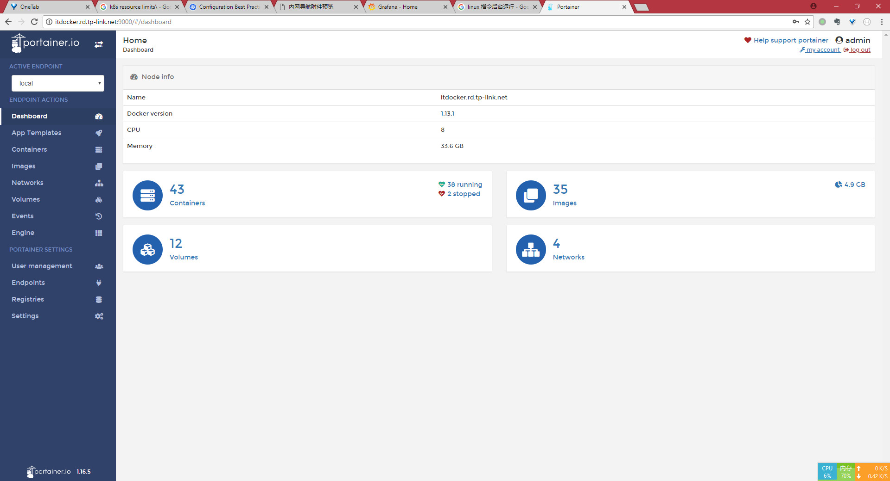
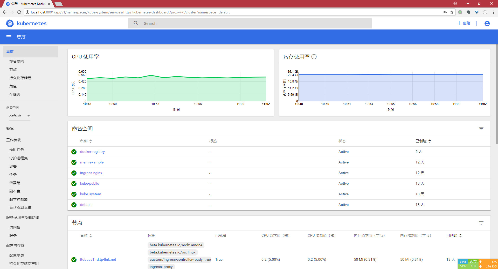
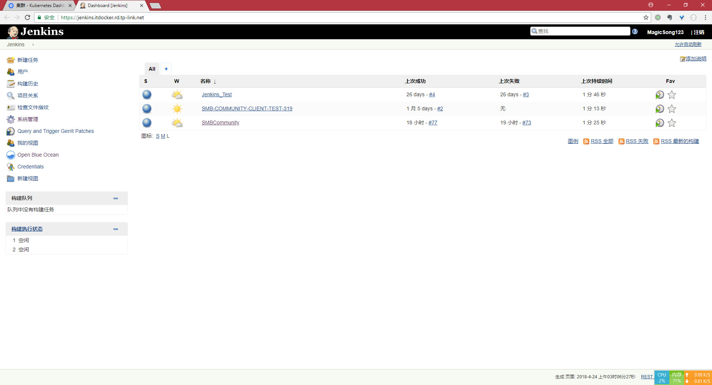
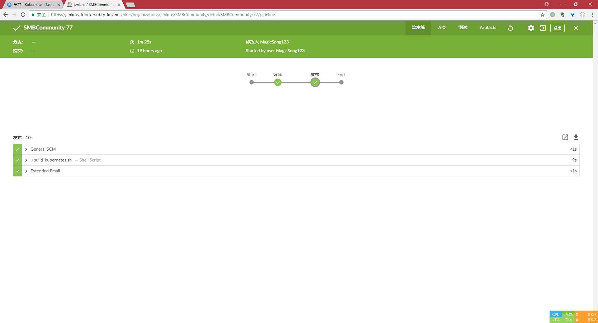
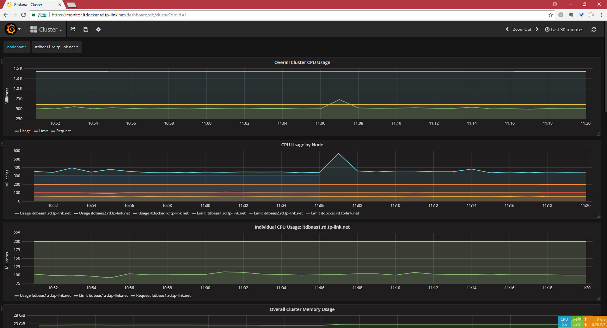
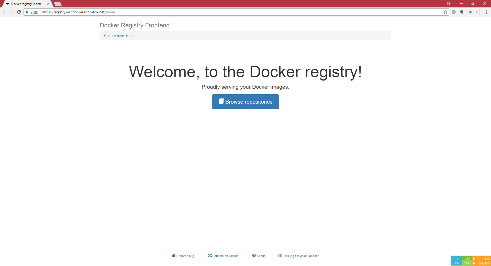

一、项目介绍
目前IT课的大部分项目都有一个对应的开发测试环境，有一些是单独的一个服务器，其他一些共享一个服务器。随着项目越来越多，这些开发测试环境越来越多，DBA管理和维护这些系统的负担越来越重；一些系统共享一个服务器，但无法共享同一个端口和文件目录，使得开发和测试环境和正式的生产环境存在一些差异（环境一致性问题），无法快速实现持续集成；Docker容器化技术能够IT课开发人员提供一个简单、安全和轻量化的虚拟系统，保证各个应用隔离性同时，缩短了开发人员的开发周期。而DBA只需要负责管理和维护容器和镜像，从而提高IT部门生产力。
二、项目完成进度
项目预定目标
- 1. docker的安装部署
- 2. 单机docker下的自动化集成测试
- 3. 迁移smbcommunity至docker
额外功能调研
- 1. docker swarm功能调研
- 2. kubernetes 功能调研
- 3. 分布式集群存储功能
- 4. 集群环境下的自动化集成
进度分析
本项目从2018年2月22日开始申请，预计到4月30日结束，项目中大部分目标都提前完成了，提前完成主要原因并不是效率高，而是对于其目标估计不够。具体的说明如下表。
| 主要工作节点 | 开始时间 | 完成时间 | 预计耗时 | 实际耗时 | 延期原因简要说明 |
|---|---|---|---|---|---|
| docker学习和部署 | 2-22 | 3-7 | 10天 | 10天 | docker的安装是非常简单的，但是申请机器，然后到权限开通期间耗费了大部分时间。考虑到本项目是一个测试项目，无法分配过多人力，实际耗时还算正常 |
| 自动化集成部署 | 3-7 | 4-10 | 30天 | 18天 | 由于事先并不熟悉一个Tomcat项目开发到部署的完整流程，多花了一些时间。实际用了18天主要是因为前期在等待机器权限的时候自学了部分内容。 |
| docker集群学习 | 4-1 | 至今 | 20天 | —— | docker的主流应用还是在分布式服务上，出于个人技能提升的目的学习了分布式docker集群的相关知识。 |
三、 项目成果展示
docker 部署
部署环境：CentOS 7.4 x64
部署文档：https://doc.itdocker.rd.tp-link.net/2018/03/14/Docker%E9%83%A8%E7%BD%B2%E6%8C%87%E5%8D%97/
部署截图：截图上显示已经部署了43个容器，使用了35个镜像

集群部署
部署环境：三台CentOS 7.4 x64服务器
集群部署方案：kubernetes
部署文档：https://doc.itdocker.rd.tp-link.net/2018/04/08/%E7%A7%91%E5%AD%A6%E5%AE%89%E8%A3%85%E6%9C%80%E6%96%B0%E7%89%88kubernetes/
部署截图：

自动化持续集成测试
部署文档：https://doc.itdocker.rd.tp-link.net/2018/03/15/%E5%9C%A8docker%E4%B8%AD%E9%85%8D%E7%BD%AEjenkins/
应用地址：https://jenkins.itdocker.rd.tp-link.net
jenkins安装截图：
jenkins首页 
jenkins 自动化部署SMBCommunity 
glusterfs 分布式存储
说明：分布式集群中服务无法指定在特定的node节点工作，所以服务存储的地方应该和主机独立开来。通常会考虑网络存储，但介于ITDocker 是一个测试项目，不需要那么多优良的硬件资源，所以考虑利用自身硬盘组建一块分布式硬盘。glusterfs 是一个分布式存储解决方案，能够利用较多廉价服务器的硬盘空间，组成一块能够自备份自修复的硬盘，而且横向扩展方便，可以很方便地加入任意的节点。ITDocker在测试中使用了glusterfs，用于保证服务的一致性。这也是对分布式存储的一次调研。对DMS和OA系统以后的优化可能具有参考价值。
其他测试应用
集群监控Grafana
地址：https://monitor.itdocker.rd.tp-link.net
应用截图：
docker私有仓库
仓库地址：https://registry.itdocker.rd.tp-link.net
仓库管理工具地址：https://registry-ui.itdocker.rd.tp-link.net
管理工具截图：
高可用redis主从集群
地址：TCP://172.29.41.127:26379
集群架构：后端为一主两从+四个哨兵，前端是nginx负载四个哨兵的Load Balancer和高可用性。
说明：在k8s上能够非常方便的建立一个redis主从集群，一个命令就可以为一个应用配置一个redis集群，同时还能测试redis集群的高可用性以及横向扩展能力。
四、 经验总结
主要困难
- docker的主要原则就是尽量一个容器里做一件事情（低耦合），但是现有的一些项目各个模块之间耦合度太高。比如一个项目分前端和后端，为了方便在maven中装了一个前端打包插件，允许在maven中调用前端打包工具进行打包，这样一来，一次编译就能同时编译前端和后端。这种做法在单机环境是没有问题的，但是在docker下就比较为难。为此，实验时在一个Maven的镜像中安装了sencha，安装过程并不顺利。最后只能在ubuntu镜像上安装maven和sencha，总结起来就是docker为了能够完成一次性编译的任务，装了一个操作系统（占用较大空间，启动也慢）。但是如果能够做到前后端真正分离的话，一个sencha镜像和一个maven镜像就可以独立解决（而且完全可以是并行的）。
- 维护docker集群需要写很多配置文件，需要做很多测试，如果直接在服务器上写的话，vim效率低；在本地写然后同步到服务上再运行效率也低。为此个人研究出了一套基于WSL（windows subsystem for linux）+vscode的方案，文档地址在这里(https://doc.itdocker.rd.tp-link.net/2018/04/20/WSL-vscode%E5%8F%8C%E5%89%91%E5%90%88%E7%92%A7/)，在这个方案下能够提升系统管理员测试和部署效率。
- 在部署kubernets的初期，成功搭建了一个集群之后，部署的应用只能在部署的机器上看到，集群中其他机器看不到，debug了两天才发现是节点之间UDP协议不同。当初申请文档的时候错将节点之间互相访问无限制的协议填了TCP，浪费了很多时间在这个错误排除上。以后要部署集群的时候一定要注意这个点，互访无限制要包括任何协议。网上的教程默认都不会考虑到这个限制，所以很少有人会出现这个问题，搜索了半天也搜索不到答案。
- k8s对安全的要求比较高，因为上面任何一个部署的容器都可以轻而易举获得root权限（通过挂载
/目录）。许多应用部署都强制要求https，以前那种不考虑安全传输的部署方式行不通。学习了一些安全相关的知识，包括SSL和Access Control等才能开始正确部署应用。
技术积累
本次调研算是初步完成了，下面梳理一下个人理解下的Docker对于IT课业务影响。
优点
- DBA能够统一管理应用程序。如果有人问IT课开发与测试环境上有哪些应用，这个问题基本上不会有答案。docker能够轻而易举给出这个问题的答案。其次，docker能够给每一个应用分配相应的资源，提醒开发者程序的资源是有限的，从而写出优秀的代码。DBA也能更方便地管理手上的计算资源和存储资源，学会合理地进行资源分配，对一些不活动的容器进行限制，提高服务器资源利用率。
- 硬件资源管理方便。如果docker性能真的遇到了瓶颈，需要申请服务器资源了，只需要将集群中的节点克隆一个就好了。
- 开发人员只要提交代码，通过审核，就会自动有一个新的容器生产，提高了开发效率。
- 分布集群下的开发讲究低耦合高内聚，因为谁也不清楚开发的应用部署在哪个节点。DMS系统就是由于很多东西写在了一起，导致后续流量上来了出现问题难以维护。所以在这种开发模式下，开发者会自己提高应用程序的内聚，让自己的应用程序打包成镜像就能在任意的节点运行。
- 分布式集群下存储和单机也不同，集群下的存储是所有节点共享的，并且和主机分离（很多时候并不会挂载在主机上，而是让容器去挂载），如果DMS和OA采用这种模式的话，那么DMS系统就能专心处理业务逻辑，文件的备份交给存储，文件就不需要在节点间同步同时也能保证容灾性。
- 在docker上开发的应用可以在任何能够运行docker的系统上运行，包括windows。
- docker集群上应用能够统一监控，日志的统一管理，后续业务上来了，可以对日志进行信息挖掘，针对热门请求优化后端逻辑。
缺点
- 分布式集群下对开发人员的代码能力有了更高的要求，高内聚低耦合的应用更适合在集群上跑，这会对现有业务代码产生影响。开发人员需要写更好甚至有可能更多的代码维护低耦合。这需要更多的精力和时间。
- 管理分布式集群需要DBA良好的架构能力，对一些应用统一规划，诸如Tomcat应用日志等。同时对资源的调度也需要更多的经验，不至于经常出现OutOfMemory的错误。
- 维护一个集群需要写很多脚本，DBA也需要有强大的Coding能力。
架构是为业务服务的，上述三点在人力不足的情况下很难满足，当前IT课的开发还算处于稳定状态，IT课业务是否需要部署集群还有待商榷。
总结
总的来说，Docker是一个让人感到惊艳的项目，它将应用隔离、部署以及资源管控都做到了一个相当可靠的程度。如果说docker是一把利剑，那么k8s就是一个善于用剑的武士，将docker的威力发挥到了极致。k8s将docker真正地带进了生产环境。如果公司的小型应用越来越多，可以考虑将k8s应用于正式环境。docker很适合我司的业务架构，在未来项目越来越多的时候，说不定可以考虑容器化公司的IT业务，将服务至于k8s云上。